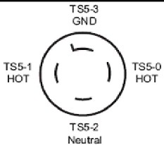
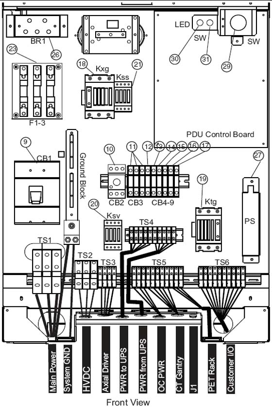

Operating Documentation
Direction 5193574-800, Rev# 22
LightSpeed 7.X Service Methods
Module Version 1.0, Version Date 4/22/10
Operating Documentation |
| Required Persons | Preliminary Reqs | Procedure | Finalization |
|---|---|---|---|
| 1 (FE or mechanical supplier) | Not Applicable | 20 mins | Not Applicable |
| Item | Qty | Effectivity | Part# | Manufacturer | |
|---|---|---|---|---|---|
| Digital VOM with the capability to read 0.5 ohms | 1 | - | - | - | |
| #18 wire | 30 ft. | - | - | - | |
| 600 VAC meter leads | - | - | - | ||
| ||||
| Potential for Data Loss and/or Equipment Damage To prevent potential data loss and equipment damage, please do the following:
| ||||
Reference Illustration 1.
| ||||
| USE AND FOLLOW LOCKOUT/TAGOUT PROCEDURES; LOCK OUT WALL POWER. | ||||
Verify that less than 1 ohm of resistance exists between the following connections:
Table 1: Resistance Verification Points
| From | Signal Name (color) | To | |
| PDU TS2-1 | +HVDC (Red) | Gantry HV Power Pan TS1-1 | Check box when complete |
| PDU TS2-2 | HVDC Ground (Green/Yellow) | Gantry Power Pan Chassis | Check box when complete |
| PDU TS2-3 | -HVDC (Black) | Gantry HV Power Pan TS1-2 | Check box when complete |
| PDU Ground Bus | HVDC shield | Gantry HVDC cable shield | Check box when complete |
| PDU TS3-1 | Axial drive 440vac (Black) | Gantry HV Power Pan TS2-1 | Check box when complete |
| PDU TS3-2 | Axial drive 440vac (Red) | Gantry HV Power Pan TS2-2 | Check box when complete |
| PDU TS3-3 | Axial drive 440vac (Orange) | Gantry HV Power Pan TS2-3 | Check box when complete |
| PDU TS3-4 | Axial drive ground (Green/Yellow) | Gantry Power Pan Chassis | Check box when complete |
| PDU Ground Bus | Axial drive shield | Gantry 440 VAC cable shield | Check box when complete |
| PDU TS5-0 | 120vac Phase B (Black) | Console Power Plug:  | Check box when complete |
| PDU TS5-1 | 120vac Phase A (Red) | Check box when complete | |
| PDU TS5-2 | 120vac Neutral (Light Blue) | Check box when complete | |
| PDU TS5-3 | Ground (Green/Yellow) | Check box when complete | |
| PDU TS5-4 | 120vac Phase A (Black) | Gantry LV Power Pan A1J1 Filter - L1 (by power plug) | Check box when complete |
| PDU TS5-5 | 120vac Phase B (Red) | Gantry LV Power Pan A1J1 Filter - L2 (by power plug) | Check box when complete |
| PDU TS5-6 | 120vac Phase C (Orange) | Gantry LV Power Pan A1J1 Filter - L3 (by power plug) | Check box when complete |
| PDU TS5-7 | 120vac Neutral (Light Blue) | Gantry LV Power Pan A1J1 Filter - N (by power plug) | Check box when complete |
| PDU TS5-8 | Ground (Green/Yellow) | Gantry Power Pan Chassis A1J1 Filter Ground Stud | Check box when complete |
Illustration 1: Front View of NGPDU with Covers Removed

| ||||
| TURN OFF ALL PDU CIRCUIT BREAKERS. | ||||
Set an ohmmeter to the lowest scale. Check between the following points for shorts to ground. Verify no continuity exists between the following points:
Table 2: No Continuity Verification Points
| FROM PDU | TO A1 Breaker Box | |
| TS2-1 (+HVDC) (Red) | vault ground | Check box when complete |
| TS2-3 (-HVDC) (Black) | vault ground | Check box when complete |
| TS3-1 (440vac output) (Black) | vault ground | Check box when complete |
| TS3-2 (440vac output) (Red) | vault ground | Check box when complete |
| TS3-3 (440vac output) (Orange) | vault ground | Check box when complete |
Leave the metal cover off the PDU input power panel until you complete the checks in the next section.
Use an ohmmeter to verify the presence of less than 1.0 ohm of resistance between each of the following points:
Table 3: Resistance Verification - Site Ground
| FROM | TO | |
| PDU Ground Bus | Vault Ground | Check box when complete |
| PDU Ground Bus | Table/Gantry raceway ground point | Check box when complete |
| Table/Gantry raceway ground point | Gantry Chassis | Check box when complete |
| Table/Gantry raceway ground point | Table Chassis | Check box when complete |
| Table/Gantry raceway ground point | Operator Console Chassis | Check box when complete |
| All Display or Computing Options (if any) | Operator Console Chassis | Check box when complete |
Install remaining covers on:
Gantry
Table
Raceway
Console
PDU
No finalization steps.